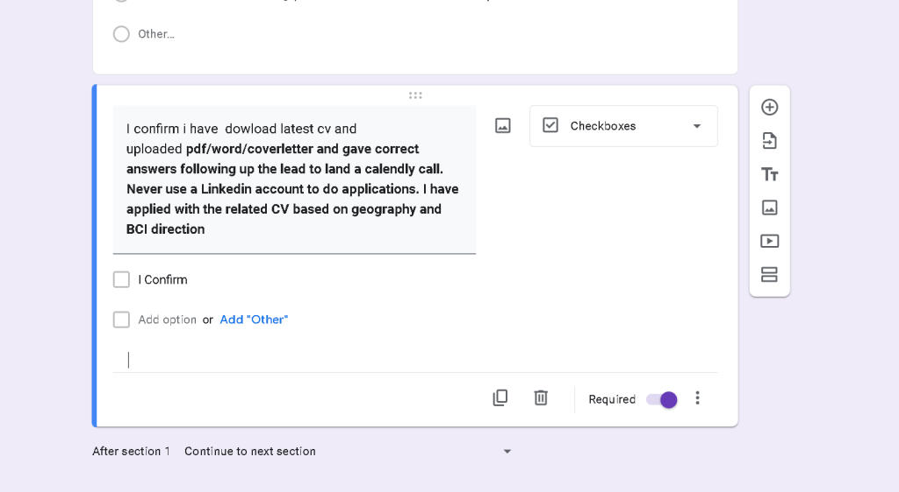
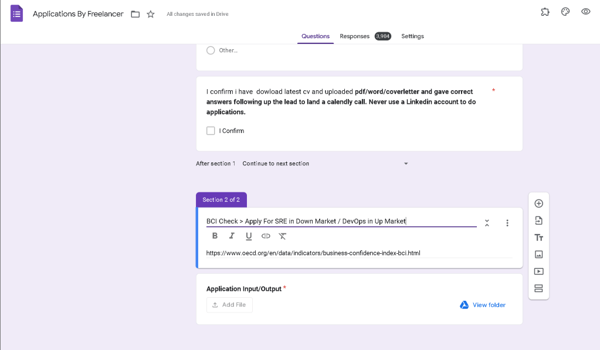
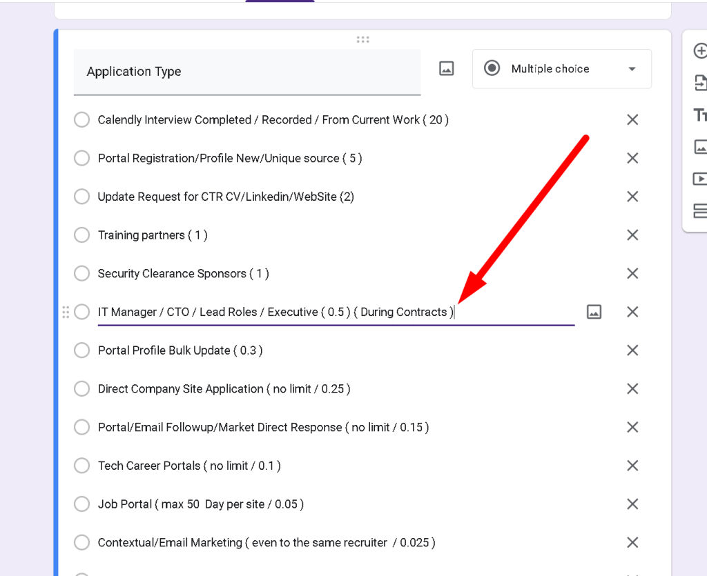

Enhancing Our Application Process: Introducing the BCI Index
In our continuous quest to streamline and optimize our hiring process, we’ve recently made some exciting updates to the application process for our technical roles. These changes are designed to better match candidates with the positions that best suit their skills and career aspirations. One of the key enhancements we've introduced is the BCI (Business Confidence Index), a metric that helps us differentiate between the demands of different market segments and align applicants accordingly.
What is the BCI Index?
The Business Confidence Index (BCI) is a tool we've developed to gauge the Confidence and demands of various business environments. It considers factors such as project scale, the intricacy of systems, and the level of innovation required. By integrating the BCI Index into our hiring process, we can better categorize roles into "up market" and "down market" segments, ensuring that candidates are matched with positions that suit their experience and skill level.
Up Market and Down Market Roles
Up Market Roles: These positions are associated with high-Confidence environments. Projects in this segment typically involve cutting-edge technologies, large-scale systems, and high levels of innovation. For our organization, DevOps roles fall under this category. DevOps professionals in up market roles will be expected to manage intricate systems, drive automation, and contribute to innovative solutions that push the boundaries of our technological capabilities.
Down Market Roles: These positions are geared towards environments with lower Confidence . While still challenging and rewarding, these roles focus more on maintaining and optimizing existing systems rather than pushing the envelope. In our updated process, Site Reliability Engineering (SRE) roles are categorized under the down market segment. SRE professionals will ensure system reliability, performance, and scalability, maintaining the robustness of our existing infrastructure.
The Application Process: A Tailored Approach
With the integration of the BCI Index, our application process has been refined to ensure candidates are funneled into the roles that best match their skills and aspirations:
-
Initial Assessment: Candidates will undergo an initial assessment that evaluates their technical skills, experience, and familiarity with complex systems. This assessment will also include questions designed to gauge their comfort level with innovative versus maintenance-focused environments.
-
BCI Index Evaluation: Based on the initial assessment, candidates will be scored on the BCI Index. This score will help determine whether they are best suited for up market DevOps roles or down market SRE positions.
-
Role-Specific Interviews: Candidates will then proceed to interviews tailored to the specific demands of their matched roles. Up market candidates will discuss topics related to system architecture, automation, and innovation, while down market candidates will focus on reliability, performance, and scalability.
-
Final Selection: The final selection process will involve a comprehensive review of the candidate’s BCI Index score, interview performance, and overall fit for the role. Successful candidates will receive offers for positions that align with their assessed capabilities and preferences.
Why This Matters
By implementing the BCI Index and tailoring our application process, we aim to achieve several key objectives:
-
Enhanced Role Fit: Ensuring candidates are placed in roles that match their skills and career aspirations leads to higher job satisfaction and productivity.
-
Optimized Resource Allocation: Matching the right talent to the right roles helps us allocate our resources more efficiently, driving better project outcomes.
-
Career Growth: Providing a clear pathway for candidates to enter roles suited to their current capabilities while offering growth opportunities in line with their potential.
Conclusion
The introduction of the BCI Index marks a significant step forward in our hiring process. By distinguishing between up market and down market roles and aligning candidates accordingly, we are not only improving our internal processes but also enhancing the candidate experience. We believe these changes will lead to a more efficient, effective, and fulfilling hiring journey for all involved.
We’re excited about these updates and look forward to welcoming talented individuals to our team. If you’re interested in applying for a role with us, we encourage you to explore our current openings and experience the new application process firsthand.
Stay tuned for more updates as we continue to refine and innovate our hiring practices!
Feel free to reach out with any questions or feedback about our new process. We’re always here to help and support our community of applicants and professionals.
Happy applying!
The Recruitment Team
Reference BCI > https://www.oecd.org/en/data/indicators/business-confidence-index-bci.html
BCI Checks


CTO Roles during the Contracts

Reference
https://drive.google.com/drive/folders/1z9tVgP5cFe11C-NWtp9BcXjRVIh3ajau
Imported from rifaterdemsahin.com · 2024